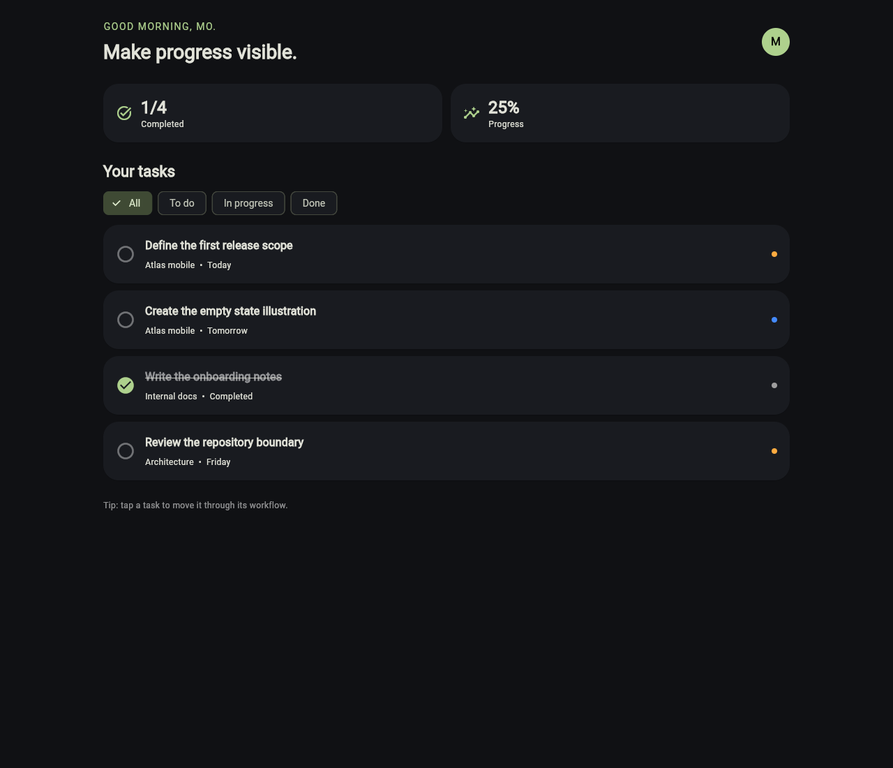

Task Manager
Flutter prototype · Dart, Material 3, GitHub Pages

What it is
A focused task dashboard that makes work progress visible at a glance. The interface combines a completion summary, workflow filters, priority labels and tap-to-cycle task actions in a responsive Material 3 layout.
Engineering approach
- Feature-first structure separates task domain models, the repository contract, controller logic and presentation widgets.
- Business rules such as completion rate, filtering and the To do → In progress → Done workflow live in a testable
ChangeNotifiercontroller. - Task cards expose status and priority as readable text and semantics, with confirmation feedback after an interaction.
- GitHub Actions runs analysis, tests and the same release web build used for GitHub Pages deployment.
Scope and next step
This is intentionally a web-first interaction and architecture prototype backed by in-memory mock data. Status changes reset on refresh; the repository seam is ready for a local database or API-backed implementation later.
Technology
Flutter, Dart, Material 3, ChangeNotifier, feature-first architecture, GitHub Actions and GitHub Pages.